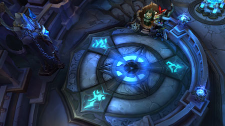
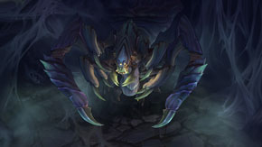

| Inicio | Campeones | Objetos | Invocadores | Modos de Juego |
 Defender y destruir
Defender y destruirEl Bosque Retorcido es el segundo mapa clásico de League of Legends, y suele contar con combates más veloces y sangrientos, con un énfasis especial en las emboscadas y en las escaramuzas a pequeña escala. La victoria se logra al abrirse camino hasta la base rival y destruyendo el nexo enemigo. |
||
| La Batalla por las Islas de la Sombra | ||
|

El Bosque Retorcido es un mapa más pequeño que La Grieta del Invocador, con una configuración horizontal y dos carriles flanqueando una zona neutral. Hay dos torretas a lo largo de cada carril, y el nexo está defendido por una única torreta. Los equipos están compuestos por tres campeones cada uno, y cada campeón aparece con una cantidad de oro sustancial. El tamaño reducido del mapa y su curva de nivel hacen que las partidas suelan ser más cortas y acaben con unas puntuaciones de muertes más elevadas.
|
||
| Terreno Neutral | ||
 La Jungla El Bosque Retorcido sólo cuenta con una jungla, en el centro del mapa, que ofrece varios accesos a ambos carriles, lo que potencia las emboscadas rápidas y los contraataques agresivos en la jungla. Los personajes de jungla de El Bosque Retorcido suelen enfrentarse a sus enemigos a menudo y muy pronto, suelen ayudar en cualquier carril o lideran el ataque sobre el altar enemigo. Las zonas neutrales de este Campo de la Justicia están repletas de acción. |
Altares La jungla de El Bosque Retorcido contiene dos altares que se pueden capturar y que ofrecen una bonificación al equipo que los controle. Controlar un solo altar otorga oro adicional por cada súbdito muerto. Controlar los dos altares a la vez otorga una bonificación sustancial en el Daño de Ataque y el Poder de habilidad. Capturar un altar hace que este se quede bloqueado durante varios minutos, con lo cual se evita que los jugadores enemigos puedan tomar el control del mismo. |
 Vilemaw El monstruo neutral más duro de El Bosque Retorcido. Esta gigantesca araña no muerta representa una amenaza importante para un equipo de campeones. Derrotar a Vilemaw otorga oro adicional, así como una mejora para todo el equipo de Velocidad de Ataque, Reducción de Enfriamiento, Regeneración de Vida y de Maná. |
| Acerca de LoL | Acerca del Creador de LoL | Comunidad de LoL | Mapa del Sitio |

| Videojuego Creado por | Contáctame |

|


|